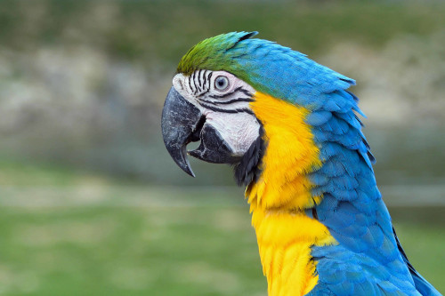

Meus Amigos de Estimação
Vamos conhecer alguns dos animais domésticos mais comuns que vivem conosco!

Cachorro
O cachorro é conhecido como o melhor amigo do homem. São leais, amorosos e proporcionam companhia e segurança.
Gato
Os gatos são animais independentes e curiosos, conhecidos por sua habilidade de caça e por serem ótimos companheiros.

Peixe
Os peixes são animais aquáticos que podem ser mantidos em aquários. São conhecidos pela variedade de cores e formas.

Hamster
Os hamsters são pequenos roedores populares como animais de estimação devido ao seu tamanho e personalidade amigável.

Coelho
Os coelhos são animais sociais e afetuosos que gostam de companhia, conhecidos por suas orelhas longas.

Papagaio
Os papagaios são aves inteligentes e coloridas que podem aprender a imitar sons e palavras. São muito sociais.